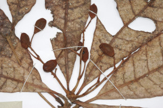
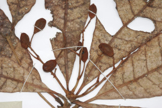

Large trees, up to 35 m tall
ದೊಡ್ಡದಾದ ಈ ಮರಗಳು 35 ಮೀ ಎತ್ತರದವರೆವಿಗೆ ಬೆಳೆಯುತ್ತವೆ.
35 മീറ്റര് വരെ ഉയരത്തില് വളരുന്ന വന് മരങ്ങള്.
உயர்ந்த பெரிய மரம் 35 மீ. உயரம் வரை வளரக்கூடியது.
Bark rough
ತೊಗಟೆಯ ಮೇಲ್ಮೈ ನಯವಾಗಿರುತ್ತದೆ.
പരുക്കന് പുറംതൊലി.
மரத்தின் பட்டை சொரசொரப்பானது.
Branchlets stout, glabrous, lenticelled
ಕಿರುಕೊಂಬೆಗಳು ಬಲಿಷ್ಟವಾಗಿದ್ದು,ಸೂಕ್ಷ್ಮಬೆಂಡು ಹೊರ ರಂಧ್ರ ಸಹಿತವಾಗಿದ್ದು, ರೋಮರಹಿತವಾಗಿರುತ್ತದೆ.
ഉറപ്പേറിയതും, അരോമിലവും, ശ്വസനരന്ധ്രങ്ങളുള്ളതുമായ ഉപശാഖകള്.
சிறிய நுனிக்கிளைகள் தடிமனாகவும், உரோமங்களற்றும் மற்றும் லெண்டிசெல்லேட் (பட்டை துளைகள்) கொண்டது.
Latex black
ಸಸ್ಯಕ್ಷೀರ ಕಪ್ಪುಬಣ್ಣವುಳ್ಳದಾಗಿರುತ್ತದೆ
കറുത്ത സ്രവം
கறுப்பு நிறம்.
Leaves simple, alternate, spiral, clustered at twig ends; petiole 1-2 cm long, flat above with a pair of often caducous spurs; lamina 10-27.5 x 2.5-8.5 cm oblanceolate, apex shortly acuminate to obtuse or rounded, base cuneate to decurrent, margin revolute, coriaceous, glabrous, drying brown beneath; midrib raised above; secondary_nerves 9-14 pairs, gradually curved; tertiary_nerves reticulate.
ಎಲೆಗಳು ಸರಳ, ಪರ್ಯಾಯ – ಸುತ್ತು ಜೋಡನಾ ವ್ಯವಸ್ಥೆಯಲ್ಲಿ ಕುಡಿಕೊಂಬೆಗಳ ತುದಿಯಲ್ಲಿ ಗುಂಪಾಗಿರುತ್ತವೆ.ಎಲೆತೊಟ್ಟು 1 ರಿಂದ 2 ಸೆಂ.ಮಿ.ಉದ್ದವಾಗಿದ್ದು, ಮೇಲ್ಭಾಗದಲ್ಲಿ ಚಪ್ಪಟ್ಟೆಯಾಗಿರುತ್ತದೆ. ಎಲೆತೊಟ್ಟುಗಳು ಸಾಮಾನ್ಯವಾಗಿ ಉದುರಿಹೋಗುವ, ಒಂದು ಜೋಡಿ ಚಾಚು ಚೀಲಗಳನ್ನು ಹೊಂದಿರುತ್ತದೆ.;ಎಲೆ ಪತ್ರ 10-27.5 x 2.5 – 8.5 ಸೆಂ.ಮಿ.ಗಾತ್ರವಿದ್ದು, ಬುಗುರಿ-ಈಟಿ ಸಮ್ಮಿಶ್ರಾಕಾರದಲ್ಲಿದ್ದು, ಕ್ರಮೇಣವಾಗಿ, ಕೊಂಚ ಚೂಪಾಗುವುದರಿಂದ ಹಿಡಿದು ಚೂಪಲ್ಲದ ಅಥವಾ ಗುಂಡಾಗಿರುವ ತುದಿಯನ್ನು ಹೊಂದಿರುತ್ತದೆ; ಬೆಣೆಯಾಕಾರದಿಂದ ಹಿಡಿದು ಕಾಂಡದವರೆಗೂ ವಿಸ್ತಾರಗೊಳ್ಳುವ ಪತ್ರದ ಬುಡಭಾಗವಿದ್ದು, ಹಿಂಸುರುಳಿ ಅಂಚನ್ನು ಹೊಂದಿರುವ ಪತ್ರಗಳು ತೊಗಲಿನ ಮೇಲ್ಮೈ ಹಾಗೂ ರೋಮರಹಿತವಾಗಿರುವುದಲ್ಲದೆ ತಳಭಾಗ ಒಣಗಿದಾಗ ಕಂದು ಬಣ್ಣದಲ್ಲಿರತ್ತದೆ.;ಮಧ್ಯ ನಾಳ ಪತ್ರದ ಮೇಲ್ಭಾಗದಲ್ಲಿ ಉಬ್ಬಿರುತ್ತದೆ.;ಕ್ರಮೇಣವಾಗಿ ವಾಲಿರುವ 9 ರಿಂದ 14 ಜೋಡಿ ಎರಡನೇ ದರ್ಜೆಯ ನಾಳಗಳಿದ್ದು ಮೂರನೇ ದರ್ಜೆಯ ಜಾಲಬಂಧ ನಾಳವಿನ್ಯಾಸವುಳ್ಳದ್ದಗಿರುತ್ತದೆ.
ഇലകള് ലഘുവും, വര്ത്തുള്ളമായി, ഏകാന്തരക്രമത്തില് ശാഖകളുടെ അറ്റത്ത് കൂട്ടമായി ക്രമീകരിച്ചിരിക്കുന്നതുമാണ്; 1 മുതല് 2 സെ.മീ. നീളമുള്ള ഇലഞെട്ട് മുകളില് പരന്നതും, കൊഴിഞ്ഞു വീഴുന്ന കുതിമുളക് പോലുള്ള മുഴപ്പോട് കൂടിയതുമാണ്.
இலைகள் தனித்தவை, மாற்றுஅடுக்கமானவை, சுழல் போன்று அமைந்தவை, நுனிக்கிளையில் இலைகள் கூட்டமாக மற்றும் நெருக்கமாகமைந்தவை; இலைக்காம்பு 1-2 செ.மீ. நீளம், குறுக்குவெட்டுத் தோற்றத்தில் பிளேனோகான்வக்ஸ் மற்றும் ஒரு ஜோடி உதிரக்கூடிய ஸ்பர் அமைப்புடையது; இலை அலகு 10-27.5 X 2.5-8.5 செ.மீ. தலைகீழ் ஈட்டி வடிவம், அலகின் நுனி சிறிது அதிக்கூரியது முதல் மழுங்கியது அல்லது வட்டமானது, அலகின் தளம் ஆப்பு வடிவம் முதல் டெக்கரண்ட், அலகின் விளிம்பு பின்புறம் வளைந்து (ரெவலுட்) காணப்படும், கோரியேசியஸ், கீழ்பரப்பு உரோமங்களற்றது, உலரும் போது கீழ்பரப்பு ப்ரவுன் நிறமடைகிறது; மையநரம்பு மேற்பரப்பைவிட உயர்ந்து இருக்கும்; இரண்டாம் நிலை நரம்புகள் 9-14 ஜோடிகள், மென்மையான வளைவுடையது; மூன்றாம் நிலை நரம்புகள் வலைப்பின்னல் அமைப்பு கொண்டது.
Inflorescence terminal panicle, dark purple-brown tomentose; flowers polygamous
ಪುಷ್ಪಮಂಜರಿ ತುದಿಯಲ್ಲಿದ್ದು, ಪುನರಾವ್ರುತ್ತಿಯಾಗಿ ಕವಲೊಡೆಯುವ ನಿಯತ ಮಧ್ಯಾಭಿಸರ ಮಾದರಿಯಲ್ಲಿದ್ದು,ತೆಳುನೀಲಿ ಮಿಶ್ರಿತ ಕಂದು ಬಣ್ಣದ ದಟ್ಟ ಮ್ಳುದುತುಪ್ಪಳವನ್ನು ಹೊಂದಿರುತ್ತದೆ. ಹೂಗಳು ಸಂಕೀರ್ಣ ಲಿಂಗಿಗಳು.
പൂങ്കുല ഇരുണ്ട ഊത-തവിട്ട് നിറത്തിലുള്ള രോമാവൃതമായ ഉച്ഛസ്ഥ പാനിക്കള് ആണ്; പുക്കള് ബഹുലിംഗികളാണ്.
மஞ்சரி தண்டின் நுனியில் அமைந்த பேனிக்கிள், அடர்ந்த ஊதா நிறம் - அகச்சிவப்பு மென்உரோமங்கள், மலர்கள் இருபாலானவை.
Drupe, obovoid, wholly enclosed in hypocarp, 1-seeded
ಕಾಯಿಗಳು ಡ್ರೂಪ್ ಮಾದರಿಯವು ವಿಪರ್ಯ ಅಂಡಾಕಾರದಲ್ಲಿದ್ದು, ಒಂದು ಬೀಜವನ್ನೊಳಗೊಂಡು,ಹೈಪೋಕಾರ್ಪಿನಲ್ಲಿ ಸಂಪೂರ್ಣವಾಗಿ ಹುದುಗಿರುತ್ತದೆ.
കായ, ഹൈപോകാര്പ്പിനകത്ത് മുഴുവനായും അടക്കം ചെയ്തിരിക്കുന്ന, അപ അണ്ഡകാരാകൃതിയിലുള്ള ഒറ്റ വിത്തോടുകൂടിയ അഭ്രകം (ഡ്രൂപ്പ്) ആണ്.
உள்ளோட்டுத்தசைகனி (ட்ரூப்), தலைகீழ் முட்டை வடிவம், பூத்தண்டு கிண்ணம் கனியை முழுவதும் மூடியிருக்கும்; ஒரு விதையுள்ள கனி.
 
